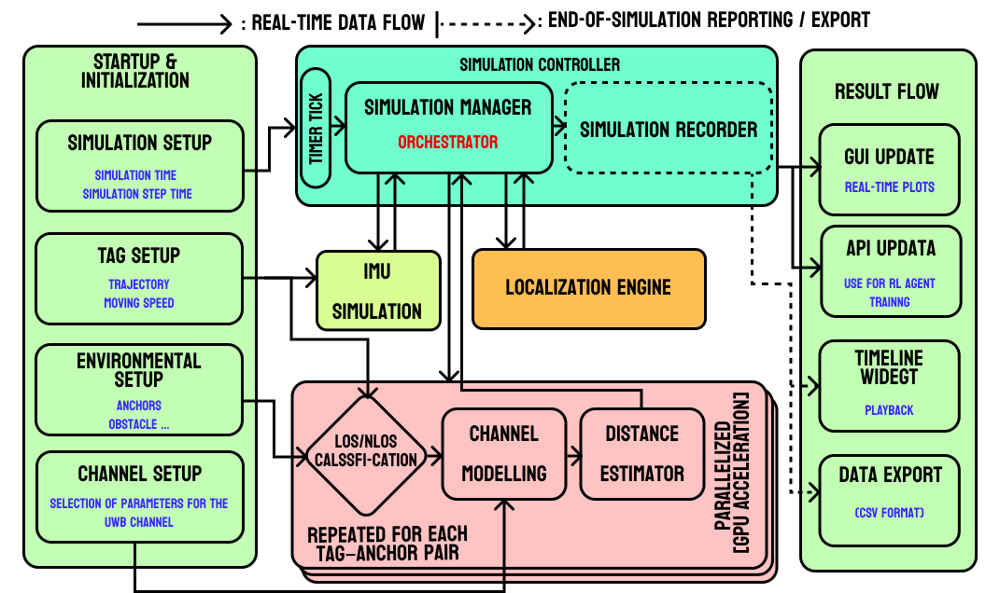

Developer Guide
Under the hood: Architecture, Extension, and Contribution.
1. Simulator Architecture
PULSE is built for modularity and speed.
Core Engine
Python-based event loop orchestrating the simulation. Handles time steps and object updates.
Physics (CuPy)
GPU-accelerated ray tracing engine. Calculates signal paths parallelized for high throughput.
UI (PyQt6)
Reactive GUI decoupled from the core logic. Updates visualization based on simulation state.

2. Custom Algorithms
Extend PULSE by adding your own localization logic.
How it Works
The system uses a Plugin Architecture. It automatically scans the `src/user_algorithms/` directory for Python files containing classes that inherit from `BaseLocalizationAlgorithm`.
Implementation Steps
- Create a file `my_algo.py` in `src/user_algorithms/`.
- Import the base class.
- Implement `name`, `initialize`, and `update`.
from src.core.localization.base_algorithm import BaseLocalizationAlgorithm, AlgorithmInput, AlgorithmOutput
import numpy as np
class MyCustomFilter(BaseLocalizationAlgorithm):
@property
def name(self) -> str:
return "My Custom EKF"
def initialize(self) -> None:
self.state = np.zeros(4) # x, y, vx, vy
def update(self, input_data: AlgorithmInput) -> AlgorithmOutput:
# 1. Get Measurements
ranges = input_data.measurements
# 2. Your Logic Here
estimated_pos = [0, 0]
# 3. Return Output
return AlgorithmOutput(
estimated_position=estimated_pos,
estimated_state=self.state,
covariance=np.eye(4)
)
3. Contribution Guidelines
We welcome contributions! Please follow these standards:
- Code Style: PEP 8.
- Type Hints: Use Python type hinting for all function signatures.
- Documentation: Add docstrings to all new classes and methods.